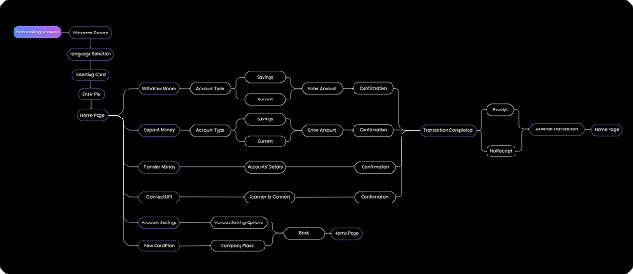
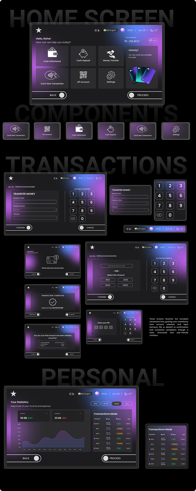
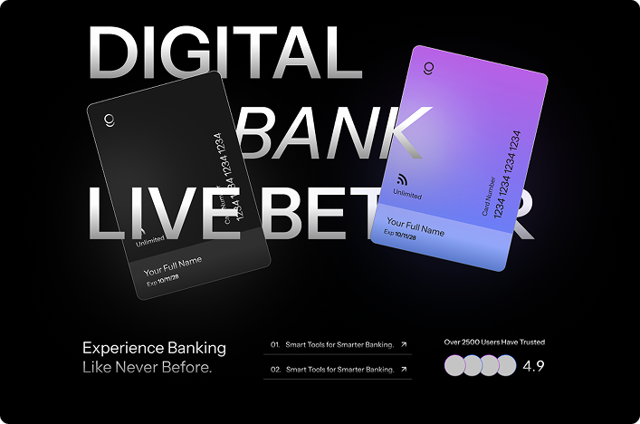

ACCESSIBILITY × BANKING × INTERACTION DESIGN
ATM Interface Redesign
Designing a banking experience around people, not assumptions.
TL;DR
Traditional ATMs often assume a user can see small interface elements, reach every control, navigate complex menus, and comfortably complete a transaction in a fixed physical environment.
This redesign explores a more accessible ATM experience through larger interaction targets, cardless authentication, thumbprint access, multilingual interaction, and an AI-assisted interface.
Background
The ATM is a physical interface.
Unlike a normal app, an ATM combines:
screen + physical space + payment hardware + security + accessibility.
That means a usability problem doesn't always live inside the UI.
Sometimes the interface begins before the user even touches the screen.
Problem
Accessibility isn't a setting.
An ATM can technically provide accessibility features and still create friction through its physical layout, navigation, authentication, or interaction model.
The redesign looked at the experience as a complete system rather than simply redesigning the screen.
Process
Designing the experience
-
Rethinking authentication
Traditional card insertion adds a physical step before the user can even begin.
The redesign explores thumbprint-based authentication and cardless OTP access as alternative entry points.
-
Designing for larger interactions
Important actions use larger targets and clearer hierarchy so users don't need precise tapping to complete essential tasks.
-
Multilingual interaction
Banking shouldn't require users to be comfortable with one language.
The interface supports multilingual interaction so users can navigate essential tasks in a language they understand.
-
Adding an AI assistant
Instead of forcing users to navigate a rigid menu tree, the AI assistant provides another way to reach common banking actions.
The goal isn't to replace the interface.
It's to make the interface easier to navigate.

Final Product
ATM Redesign

Reflections
Accessibility changed how I define the "interface."
The biggest lesson was that accessibility isn't only about colour contrast or font size.
For a physical-digital product like an ATM, accessibility can involve distance, reach, authentication, language, interaction size, navigation, and confidence.
A better interface can remove steps.
The strongest redesign decisions weren't about adding features.
They were about asking:
• Does the user actually need this step?
